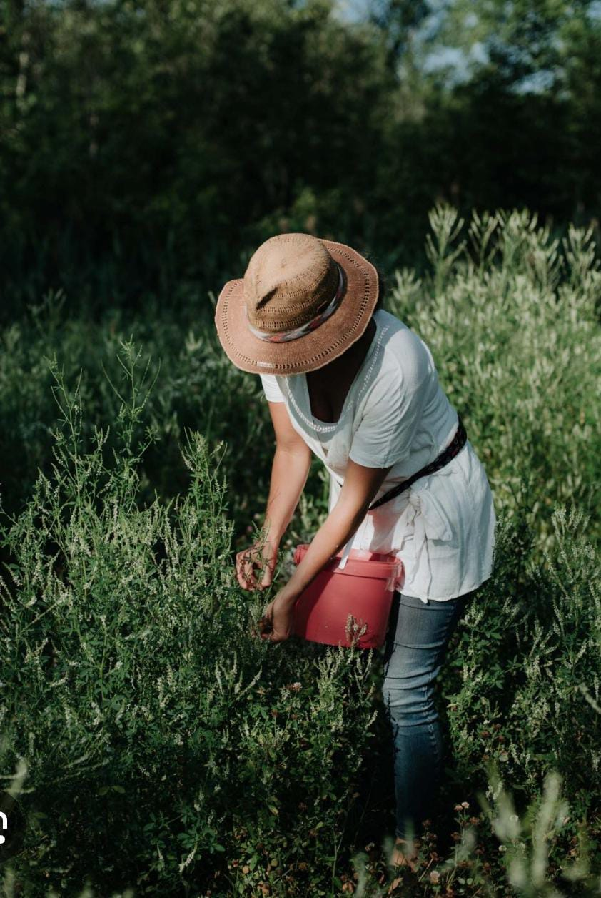

Édition Haïti
Artefact ProductsCombo de plantes
Le combo de ces trois plantes que propose Artefact Products est recommandées pour être pris ensemble par des naturopathes à celles et ceux atteints de cancer. Cancer du sein, du cerveau, de l'estomac, du colon, du sang etc...
Prix : $ 1000Free shopping. Pour 1 mois de cure complet.
Produit de bien-être. Ne remplace pas un avis médical.
Avis des clients
À venir
Questions fréquentes
Ce combo de plantes est recommandées pour être prix ensemble par des naturopathes. Il a une action ciblée sur les cellules cancéreuses et a déjà fait des bienfaits auprès de celles et ceux qui le consomment régulièrement. Il a été recommandé par des médecins spécialistes à une jeune femme atteinte d'un cancer du cerveau en phase 3 avancée. Avec la chimiothérapie et d'autres traitements naturels recommandé par ce même médecin, elle vie encore après de 9 ans sans la maladie.
Oui, le combo de plantes est conseillé pour accompagner votre traitement médical. Pris ensemble, il vous aide à avoir de meilleurs résultats en vous soutenant au quotidien. Mais il ne replace pas un traitement médical.
Les feuilles vous sont livrées telles qu'elles sont cueillies. Aucune transformation chimique ni de fabrication.
Expédition sous 3 à 5 jours ouvrés. Envois internationaux disponibles.